Schopenhauer’s Library
Table of Contents
Abstract
Schopenhauer’s Library is a project, on-hold, that aims to publish all of Schopenhauer’s Spanish books that contain personal annotations or marginalia written by the philosopher himself. It currently provides the digital edition of the book Oráculo manual y arte de prudencia (1659). This review analyzes the choices made in this digital edition, offering some comparisons with other projects that aim to publish the author’s marginalia. The project will be introduced with some general remarks related to the challenge of representing marginalia in the digital environment. The aims and methods of this digital edition will be explained, with some reflections on the editorial choices made for the representation and presentation of the digital edition. The edition can be considered an interesting example of an attempt to build a user-friendly scholarly digital edition centered on marginalia, promoting a new approach to presenting digitized content as a facilitator for accessing knowledge and performing research.
General introduction and parameters
Readers’ annotations, i.e., notes on a text or a manuscript, and marginalia, i.e., notes in the margins or white spaces of a manuscript, have traditionally played a minor role in textual scholarship. An exception was the interest in authorial annotations that had the purpose of reconstructing the genesis of a textual work, i.e., textual genetic annotations (Van Hulle 2016b, 38). The publication of Jackson’s book Marginalia: Readers Writing in Books (2001), which is entirely dedicated to readers’ annotations, changed how annotations and marginalia have been considered. Jackson underlines how the practice of annotating texts increased from the 18th century until today (2001, 51). This new custom had its origin in the fact that in that period the book became a common property, in pocket format. These new considerations raised interest in marginalia as valuable by themselves.
Moreover, the formulation of the concept of Extended Mind Theory (EMT) in cognitive philosophy in recent decades has brought new theories into textual genetic and exogenetic digital editing1. This theory, first formalized by Clark and Chalmers states that cognitive processes do not take place only in the mind but can be extended to the environment (1998). The latest theories suggest that the mind is not only extended but also extensive, i.e., the cognitive process is also influenced by the surroundings.2 In this regard, Van Hulle well explains how an external object, in this case a book or a white piece of paper, can become an extension of our brain (Van Hulle 2016a), underlining the importance of annotations in the reconstruction of a creative process.
With the help of digital environments, which give more freedom of representation (e.g., allowing image annotations, visualization of features on place, etc.), various projects published digitalized authors’ libraries to make their annotations accessible. The three most well-known are The Walt Whitman Archive (Cohen et al. 2023), Melville's Marginalia Online (Olsen-Smith and Norberg 2025), Beckett Digital Manuscript Project (Van Hulle et al. 2021), and Fontanes Handbibliothek (Bludau et al. 2019).
In 2017, another project, Schopenhauer’s Library. Annotations and marks in his Spanish books (Losada Palenzuela 2017b) was initiated to provide a scholarly digital edition (SDE) of the handwritten notes added by Schopenhauer to his Spanish books. The novelty of this digital scholarly edition lies in the decision of the editor, José Luis Losada Palenzuela, to publish the book containing the marginalia as a semi-diplomatic edition, which can be compared with the facsimile that is also provided to the user from the website. This choice is in line with Pierazzo’s reflections on how the display of a facsimile representation with its digital documentary edition challenges the user, increasing its attention, contrary to the previous belief that image-based editions would have been the best choice for digital editions.3
Schopenhauer’s library comprised 38 Spanish books, nine of which contain personal marginalia. These books have already been digitalized and made available by the Johann Christian Senckenberg University Library and the Schopenhauer Archive (Frankfurt am Main). The edition is an on-hold project that started in 2017 and was first presented at the II Congreso Internacional de Humanidades Digitales Hispánicas. Innovación, globalización e impacto, Madrid, in 2015.4 Both the digitization of the nine books with marginalia and their critical edition are incomplete works. At present, Schopenhauer’s Library contains the digital edition of only one book, i.e., Oráculo manual y arte de prudencia (1659), written by the Jesuit and philosopher Baltasar Gracián, who, through 300 aphorisms and related commentaries, seeks to guide people to live with wisdom and integrity.
The digital edition was edited by José Luis Losada Palenzuela while he was an Assistant Professor of Romance Philology at the University of Wrocław, where the edition is located. Presently, he is an Associate Professor at the University of Breslau and a member of its Digital Humanities Lab since 2023. The project did not receive any funding, but the last phase of implementation was supported by a research fellowship at the Trier Center for Digital Humanities, University of Trier, funded by the DAAD (German Academic Exchange Service).
General parameters about the structure of the edition are easily accessible from the Introduction and the Editorial principles pages, as well as from the additional resources and publications related to the project, which are available on the website. These include an article published in 2017 as a presentation of the project (Losada Palenzuela 2017a).
Aims and methods
As stated in the Editorial principles, the project aims at classifying, encoding, and editing Schopenhauer’s marginalia in his Spanish books, providing an interpretation, and transcribing both the original texts and the annotations. Schopenhauer did not have a vast collection of books, but he was a passionate reader and his annotations are interesting as a tool to provide additional knowledge of Schopenhauer as a philosopher and author (Losada Palenzuela 2011, 514). The project employs a three-step procedure: the interpretation of the manuscript’s annotations; the encoding of the annotations through digital markup; and the dissemination of the text thanks to its publication in the digital environment.
The edition currently provides the facsimile of the original Spanish book, i.e., the Oráculo manual y arte de prudencia (1659) owned by Schopenhauer, which contains his annotations; the semi-diplomatic edition of the running text of the printed book; and the critical edition of Schopenhauer’s notes. While there is no mention of the target audience, it may be assumed from the content that it is intended to reach a broader audience than just scholars, or philosophers, since its presentation can be easily browsed and accessed by non-experts, casual users, and curious readers.
Documents are visually represented in three different ways: the original book is represented both as a facsimile and as a semi-diplomatic edition, and the annotations are encoded as part of the semi-diplomatic edition. The transcription of the manuscript is reliable and without errors. Interpretations of less clear passages are provided by the editor in the editorial notes, which are also the only commentary available.
XML/TEI Encoding
The edition follows the TEI standard, based on XML, for the representation of texts in digital form. The principles followed for the encoding of each element and a sample of the encoded text are provided in the section Encoding of the page Editorial principles (Fig. 4). The encoding is organized according to three levels:
- The bibliographic information encoded in the
<teiHeader>element; - The book encoded as a print resource according to the TEI Guidelines, and
contained in the element
<text>. The text is subdivided in the three parts<front>,<body>,<back>; - The annotations and marginalia encoded with core elements for transcriptional work representing additions, deletions, omissions, and substitutions (TEI Consortium 2024a).
Inside the text, the dividing element <pb> indicates
the beginning of the page. This element is used also in the HTML visualization as an
anchor to link the facsimile of the single page, to let the user compare it to the
transcription on the side.
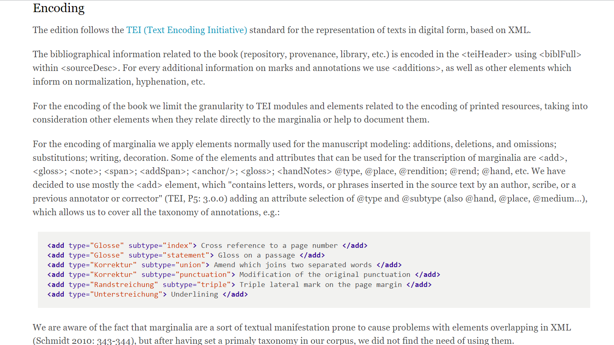<add>, specifically intended for insertions made by an
author, scribe, annotator, or corrector (TEI
Consortium 2024b). Two attribute selections of @type and
@subtype allow the editor to cover the taxonomy of marginalia. The
types of annotations are “Glosse” (en. “gloss”); “Korrektur” (en. “correction”);
“Randstreichung” (en. ”marginal marks”); “Unterstreichung” (en. “underlining”). The
subtype specifies the purpose of the type or the kind of implementation, e.g., the
“Glosse” can be an “index”, i.e., a reference to a page number, or a “statement”,
i.e., a gloss on a passage (Fig. 1).
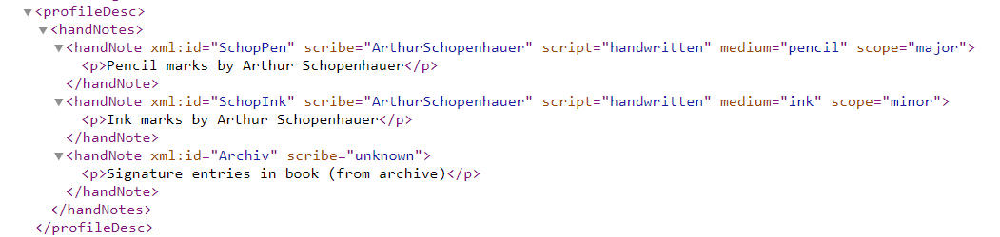@hand whose values are declared in the <handNotes>
element, in the TEI header (Fig. 2):
- “SchopPen”: pencil marks by Arthur Schopenhauer;
- “SchopInk”: ink marks by Arthur Schopenhauer;
- “Archiv”: signature entries in book (from archive).
Presentation
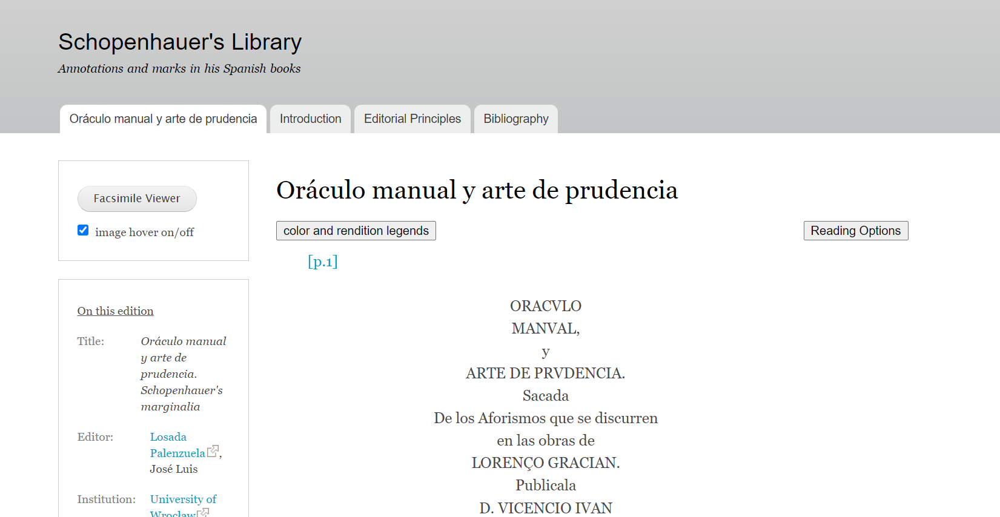
The three informational pages Introduction, Editorial principles, and Bibliography consist of plain text and provide links to specific additional information on the web. On the page of the edition, some useful tools are provided: there is a sidebar on the left, with two different blocks. The first one contains a button to show the facsimile of the original book and a checkbox that enables the user to display the respective image inside the semi-diplomatic edition when passing over the number of the page with the mouse. When the image hover function is off, the facsimile is accessible by clicking on the page number in the semi-diplomatic edition. Furthermore, the facsimile can be moved to be placed alongside the correspondent transcription for comparison. A pin on the bottom-left angle of the facsimile allows the image to keep its position while scrolling.
In the second block, there is information about the edition, its source, and links to obtain more details about the people and institutions involved in the project.
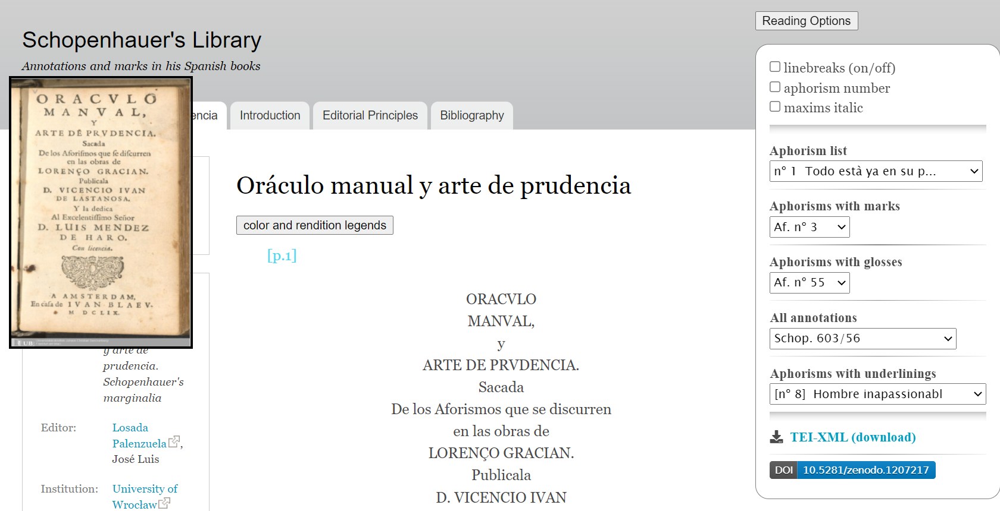
- Linebreaks (on/off): to remove or reapply line breaks; it preserves paragraph breaks;
- Aphorism number: to show the enumeration of Gracián’s aphorisms;
- Maxims italic: to change the font of maxims into italic.
In the second part of the window, there are five options to access single aphorisms, which display aphorisms with some specific characteristics:
- Aphorism list;
- Aphorisms with marks;
- Aphorisms with glosses;
- All annotations;
- Aphorisms with underlining.
This function allows the user to access the entire contents of the edition, with a non-linear reading of the text. There are no other options available for searching through the text, and in particular for searching within the facsimile viewer, which limits user interaction to either moving forward to the following page or returning to the previous one. It is possible to jump to a specific page only through the page number displayed in the text.
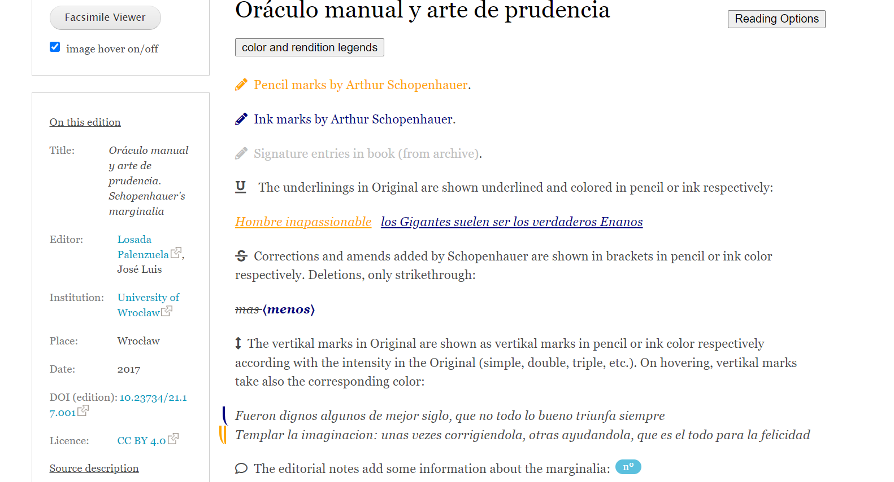
The SDE does not contain a critical commentary. This role is, to some extent, filled by the editor’s notes, which are accessible within the text via a tooltip, and which provide explanatory information. These notes clarify some corrections or annotations on the text made by Schopenhauer. Schopenhauer’s marginalia sometimes provide critical corrections to Gracián’s book, and this is the only information that we can find inside the edition of the original book held by Schopenhauer. At the end of the reading options, a download link to the XML/TEI encoded document and a DOI pointing to the open-access research data repository Zenodo is provided. The license, displayed in the left bar alongside the information about the edition, is Creative Commons 4.0 International Attribution (CC BY 4.0).6
The facsimile is published under the license Public Domain Mark 1.07 by the Johann Christian Senckenberg University Library. To show the facsimile, the editor reused the publicly available raster images in the JPG format provided by the library, which allows the users to access and compare the whole book in an overall good quality but, inevitably, starts to look grainy when zoomed in. Furthermore, there are no links to social media accounts related to this SDE.
Comparison with other SDEs of Marginalia
The benefit of the representation implemented in the Schopenhauer’s Library can be clarified by showing three alternative solutions in other projects concerning marginalia: the first, Melville’s Marginalia Online, is wholly image-based. The second, The Walt Whitman’s Archive, provides both a facsimile representation and a digital documentary edition but is tied to a fixed and non-searchable visualization, while the third, the Beckett Digital Library, provides a non-linear search just for marginalia.8
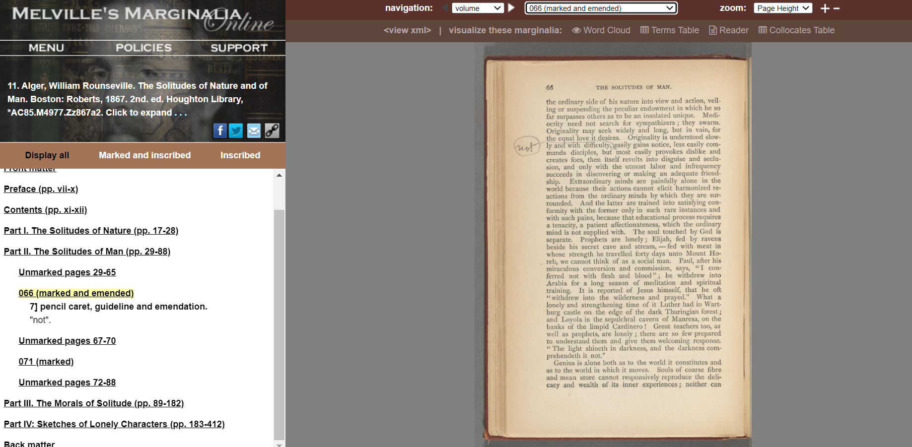 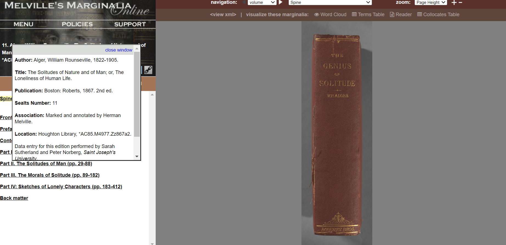
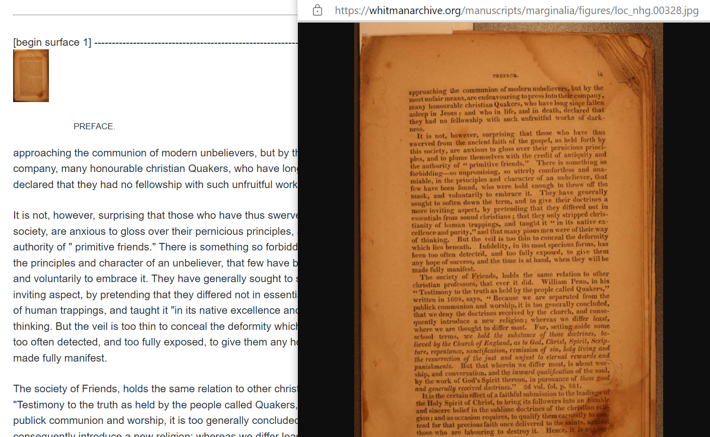 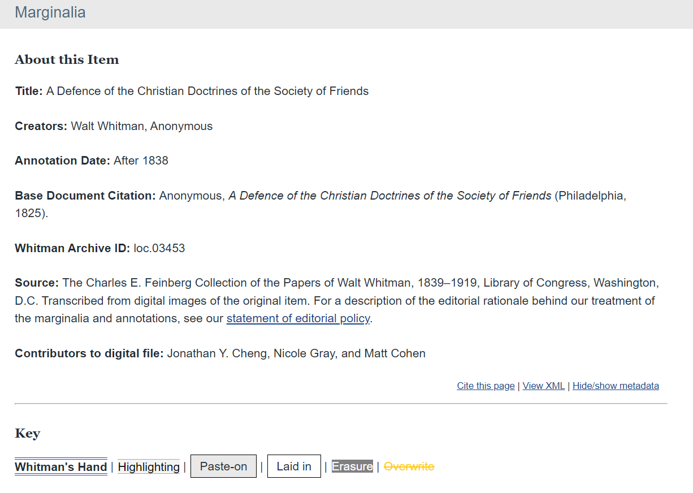
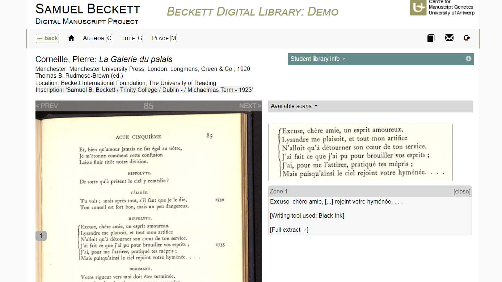
A functional feature of the website of Beckett Digital Library is its organization through four semantic categories (“Author”, “Title”, “Place”, and “Date”), each one organized into subcategories, which improves the user experience in the browsing of the resources. Four additional options allow filtering according to the type of content (“Inscription”, “All Reading Traces”, “Manuscript Only”, “Student Library”). Nevertheless, this difference in the organization stems from the necessity to arrange a larger quantity of materials and resources.
These three examples, despite achieving the archival purpose, provide few options for accessibility and searchability. This probably is because these projects have been carried out at another stage of technological development: for example, full-text search for such large projects is a realistic and achievable objective now, and it is a powerful instrument to provide users with what was more difficult at the time these projects were created.
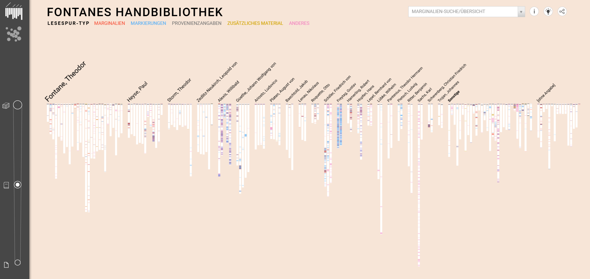 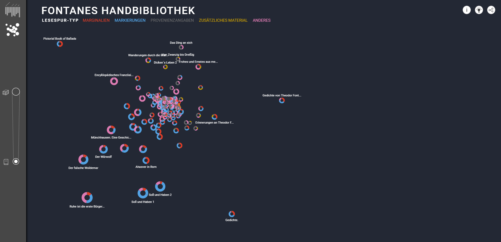<svg>, which is used as a container to embed SVG graphics,
i.e., two-dimensional XML-based vector images. According to the kind of elements it
contains the data will be represented in a different graph. In this case, they
implemented two visualizations:
-
Lesespuren (en. “reading tracks”), in which each book is a
<rect>element inside the<svg>tag, and all the rectangles are grouped by the author (Fig. 11); -
Ähnlichkeiten (en. “similarities”), in which the visualization is
still constructed through the
<svg>elements to recreate a cartesian plane where the books, represented as circles, are plotted according to the similarity of their reading tracks. Moreover, the books that belong to the same author are linked together (Fig. 12).
The reading tracks are grouped into five categories: “Marginalien” (en. “marginalia”), “Markierungen” (en. “marks”), “Provenienzangaben” (en. “provenance”), “Zusätzliches Material” (en. “additional material”) and “Anderes” (en. “others”). Each of them has a color assigned.
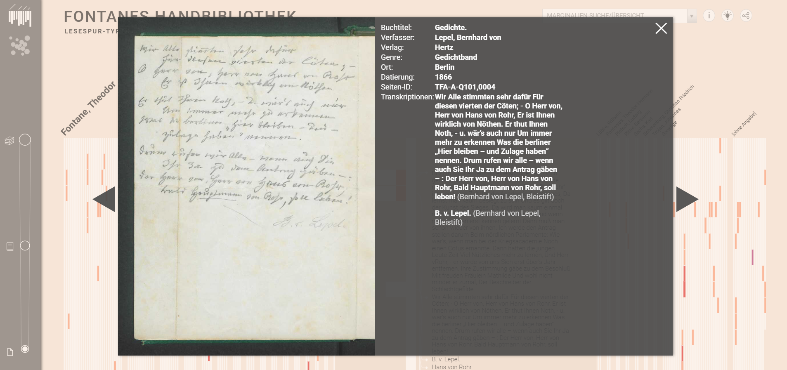
Unlike the examples provided until now, Fontanes Handbibliothek provides a solution that is more oriented to data visualization than to textual analysis. In this regard, both chronologically and methodologically, the Schopenhauer’s Library can be considered the bridge between the previous marginalia’s libraries and a more web-oriented approach.
Technical infrastructure and publication
For the creation of the SDE, the editor used the TEICHI framework10 (Pape et al. 2012) to display TEI files using XSLT in a Drupal environment,11 a modular content management system (CMS). The TEICHI framework, which already brought some limitations in the options of elements that could be displayed and in the available tools, is nowadays obsolete; in March 2018, a new version of Drupal was released for security reasons,12 for which TEICHI was not updated.
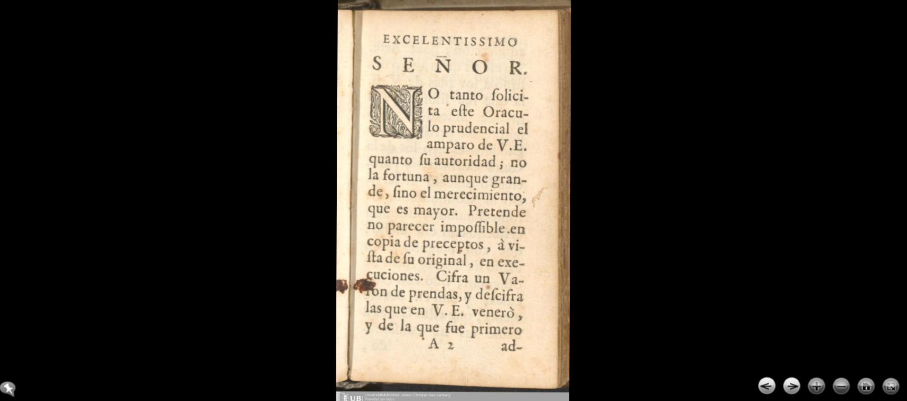
Furthermore, in the footer of the website, there is a generic search box that is not implemented: while it is possible to write words inside the field, no results are returned. Some of these functions were active in the first implementation of the edition using Drupal, but as stated, the related plug-ins are no longer available.
Some limitations, however, are due to the TEICHI framework itself, which, on one hand, was easily accessible and provided a smart visualization but, on the other hand, was not one of the most flexible frameworks to present digital editions: it was not possible, for example, to get a visualization that allowed side-by-side comparisons between the facsimile and the semi-diplomatic edition. Regarding the tools, the framework offered a layout with some default features that could be customized. In the final layout of the Schopenhauer’s Library, the left sidebar is used for editorial information while, for common practice, it generally hosts the direct search section. This functionality is, instead, included in the right box, a space intended by the module to be the commentary’s position, and used by this project for the Reading Options. The choice to use the TEICHI module was also possible, since this edition needed to provide only one version of the text. This framework is not intended to give variants, even if it is possible to insert one alternative reading.
The advantage of the TEICHI framework, however, resided in the possibility of visualizing a text independently from its encoding. This was possible since it allowed the transformation of an XML-TEI document through XSLT into an HTML document with associated CSS, simplifying the visualization of the marginalia.
Conclusion
It is difficult to place Schopenhauer’s Library in one of the fields of textual scholarship. Following Sahle’s quality thresholds to define what must be considered an edition, “an edition project is not an edition”, since an edition “gives a complete representation of its subject” (Sahle 2016, 35). According to this, to define Schopenhauer’s Library as a digital edition, it should give the minimum representativeness of the subject, i.e. the digital edition of the Spanish books held by Schopenhauer, publishing more than one of the five books already digitalized by the Johann Christian Senckenberg University Library (Frankfurt am Main) in collaboration with the Schopenhauer Archiv.
Nevertheless, as a non-budget project, it provides a trustworthy and complete edition of one of these books with a high level of overall quality, both on the textual and digital sides. Moreover, Schopenhauer’s Library has some of the attributes of a scholarly digital edition identified by Sahle: it is the “critical representation of historic documents” (Sahle 2016, 23); once printed, it will lose content and functionalities (Sahle 2016, 38); and it has academic relevance and usefulness for scholars.
This project has not been updated since the publication of the first book in 2017. However, the hosting institution, the University of Wrocław, and the edition’s availability in an XML/TEI standard, which is an international text encoding standard and allows interoperability, are factors that should ensure the long-term use of the edition. Unfortunately, even if it is an interesting edition, it is unlikely that many scholars will use it as an SDE due to the lack of material about Schopenhauer’s Spanish library and annotations, which do not provide a complete view of the subject since the focus of this edition currently is on how to encode marginalia most efficiently.
This edition, as an edition of marginalia, should be considered part of the branch of textual scholarship that focuses not on the authorial text but on the surrounding context, which is the basis for the genetic critical edition. This should also fit the idea of a genetic critical edition given by Dirk van Hulle (2016a, 109), which includes the exogenesis, in this case an author’s library, as part of the reconstruction of the process of creation of an authorial work. However, key elements to define it as a genetic edition are missing since it does not provide contextual or additional information that guides the user in making links between this library and Schopenhauer’s works. Nevertheless, a researcher or an expert in the field could obtain the missing or additional information to proceed with a genetic reconstruction from projects of this kind, which easy access to the materials through digital tools and non-linear research.
The TEICHI framework for Drupal is not available anymore, yet the experience provided by its implementation can be taken as an example to exploit the potential of the digital environment to display original content in a new way that can foster study and research. Even if this framework had some limits regarding visualization, the transcription of the text with the addition of some explicative comments that it provided are fundamental elements for retrieving information and achieving knowledge about a text with marginalia.13 This tool followed the digital paradigm, the “real revolution” of transmedialization, as defined by Sahle: “The shift from media orientation to data orientation with its focus on abstraction, modelling and multipurpose representations” (Sahle 2016, 32).
The loss of features during conversion processes opens up new questions and concerns about the sustainability and maintenance of SDEs. While the use of standards, such as XML/TEI guarantees some level of stability, on the side of the graphic interface, it is an open challenge to provide long-term access to the users. Since the main aim of the publication of a digital edition on the web should be to make the resources accessible to the users, in this review, it has been pointed out which novelties and functional solutions were available with the TEICHI framework that future projects may try to implement in the design of their interface.
Schopenhauer’s Library has not only the aim to prove that the marginalia must be studied as a component of textual scholarship but also to state the necessity of a flexible and easy-to-use module for the creation of digital edition websites, that can be adapted according to the specific requirements of the digital edition.
Bibliography
- Bleeker, Elli. 2015. “Melville’s Marginalia Online.” RIDE: A Review Journal for Digital Editions and Resources 3. Accessed January 8, 2025. https://doi.org/10.18716/ride.a.3.1.
- Bludau, Mark-Jan, Viktoria Brüggemann, Anna Busch, Marian Dörk, Kristina Genzel, Klaus-Peter Möller, Sabine Seifert, and Peer Trilcke. 2019. Fontanes Handbibliothek. Accessed January 8, 2025. https://web.archive.org/web/20250108193820/https:/uclab.fh-potsdam.de/ff/.
- Clark, Andy and David J. Chalmers. 1998. “The Extended Mind.” Analysis 58: 10–23.
- Cohen, Matt, Ed Folsom, and Kenneth M. Price, eds. 2023. The Walt Whitman Archive. Accessed January 8, 2025. https://web.archive.org/web/20250108194313/https://whitmanarchive.org/.
- Gracián y Morales, Baltasar. 1659. Oráculo manual y arte de prudencia. Amsterdam: Juan Blaeu.
- Hutto, Daniel D. and Erik Myin. 2013. Radicalizing Enactivism: Basic Minds without Content. Cambridge, MA: MIT Press.
- Jackson, H. J. 2001. Marginalia: readers writing in books. New Haven: Yale University Press.
- Losada Palenzuela, José Luis. 2011. “Cantar en falsete. Arthur Schopenhauer y la recepción de la Numancia en Alemania.” In Visiones y revisiones cervantinas. Actas selectas del VII Congreso Internacional de la Asociación de Cervantistas, edited by C. Strosetzki, 511–526. Alcalá de Henares: Ediciones del Centro de Estudios Cervantinos. http://cvc.cervantes.es/literatura/cervantistas/congresos/cg_VII/cg_VII_45.pdf.
- Losada Palenzuela, José Luis. 2017a. “Anotaciones manuscritas en bibliotecas de autor. Propuesta de etiquetado y de publicación digital.” Revista de Humanidades Digitales, 116–131. https://doi.org/10.5944/rhd.vol.1.2017.16563.
- Losada Palenzuela, José Luis. 2017b. Schopenhauer’s Library. Annotations and marks in his Spanish books. Accessed January 8, 2025. https://web.archive.org/web/20240617100823/http:/schopenhauer.uni.wroc.pl/.
- Olsen-Smith, Steven, and Norberg, Peter, eds. 2025. Melville’s Marginalia Online. Accessed January 8, 2025. https://web.archive.org/web/20250108194603/https://melvillesmarginalia.org/.
- Pape, Sebastian, Christof Schöch, and Lutz Wegner. 2012. “TEICHI and the Tools Paradox. Developing a Publishing Framework for Digital Editions.” Journal of the Text Encoding Initiative. https://doi.org/10.4000/jtei.432.
- Pierazzo, Elena. 2014. “Digital Documentary Editions and the Others.” Scholarly Editing: The Annual of the Association for Documentary Editing, 35. https://web.archive.org/web/20250106191009/https://www.scholarlyediting.org/2014/essays/essay.pierazzo.html.
- Sahle, Patrick. 2016. “What is a Scholarly Digital Edition?” In Digital Scholarly Editing: Theories, Models and Methods, edited by Matthew James Discroll and Elena Pierazzo, 19–39. Cambridge, UK: Open Book Publishers. https://doi.org/10.11647/OBP.0095.02.
- Sichani, Anna-Maria. 2017. “Literary drafts, genetic criticism and computational technology. The Beckett Digital Manuscript Project.” RIDE: A Review Journal for Digital Editions and Resources 5. https://doi.org/10.18716/ride.a.5.2.
- TEI Consortium, eds. 2024a. “Scope of Transcriptions” Guidelines for Electronic Text Encoding and Interchange. 4.8.1. http://www.tei-c.org/Vault/P5/4.8.1/doc/tei-p5-doc/en/html/PH.html.
- TEI Consortium, eds. 2024b. “<add>” Guidelines for Electronic Text Encoding and Interchange. 4.8.1. https://tei-c.org/Vault/P5/4.8.1/doc/tei-p5-doc/en/html/ref-add.html.
- Van Hulle, Dirk. 2016a. “Exogenetic Digital Editing and Enactive Cognition” In Digital Scholarly Editing: Theories, Models and Methods, edited by Matthew James Discroll and Elena Pierazzo, 107–118. Cambridge, UK: Open Book Publisher. https://doi.org/10.11647/OBP.0095.06.
- Van Hulle, Dirk. 2016b. “Modelling a Digital Scholarly Edition for Genetic Criticism: A Rapprochement” Variants 12–13: 34–56. https://doi.org/10.4000/variants.293.
- Van Hulle, Dirk, Vincent Neyt, and Wout Dillen, eds. 2021. Samuel Beckett Digital Manuscript Project. Accessed January 08, 2025. https://web.archive.org/web/20250108195928/https://www.beckettarchive.org/.
Notes
- Exogenesis in an edition is an approach that puts an author’s work in perspective as part of an intertextual dimension made up of external elements, such as the author’s library, which become relevant to the reconstruction of the creation process (Van Hulle 2016a, 114). ↑
- For one of the latter articles that explains this new concept of Radical Enactive Cognition see Hutto and Myin 2013. ↑
- “The dialectic relationship between the diplomatic edition and the facsimile representation, while demanding extreme editorial rigor, engages the users in close inspection of the transcriptions/translations enacted by the editor in a sort of imaginary competition” (Pierazzo 2014, 4). ↑
- The presentation Marginal annotations in books. Interpretation, encoding, publication is available online: http://editio.github.io/slides/marginalia-en#/portada. ↑
- It does not work for the Introduction. ↑
- This licence allows to share and adapt content, on the condition of giving credits to the author. ↑
- http://web.archive.org/web/20250103184905/https://creativecommons.org/publicdomain/mark/1.0/deed.en. ↑
- For further analysis on these projects, it is worth mentioning that Melville’s Marginalia Online and Beckett Digital Library have been reviewed respectively in RIDE Issue 3 (see Bleeker 2015) and RIDE Issue 5 (see Sichani 2017). ↑
- https://web.archive.org/web/20250108204757/https://www.fontanearchiv.de/en/. ↑
- https://github.com/teichi/teichi. ↑
- https://www.drupal.org/. ↑
- https://www.drupal.org/psa-2018-001. ↑
- “La mera digitalización en forma de imágenes es, sin duda, una fuente valiosísima de información. Si a aquella añadimos reflexión e interpretación, producimos conocimiento.” (Losada Palenzuela 2017a, 130). ↑
@article{schopenhauer,
author = {La Manna, Bianca},
title = {Schopenhauer’s Library},
journal = {RIDE – A review journal for digital editions and resources},
number = {20},
year = {2025},
doi = {10.18716/ride.a.20.1},
url = {https://doi.org/10.18716/ride.a.20.1},
}TY - JOUR
AU - La Manna, Bianca
TI - Schopenhauer’s Library
T2 - RIDE – A review journal for digital editions and resources
IS - 20
PY - 2025
DA - 2025/01
DO - 10.18716/ride.a.20.1
UR - https://doi.org/10.18716/ride.a.20.1
PB - Institut für Dokumentologie und Editorik e.V.
LA - en
ER - La Manna, B. (2025). Schopenhauer’s Library. RIDE – A review journal for digital editions and resources, (20). https://doi.org/10.18716/ride.a.20.1La Manna, Bianca. "Schopenhauer’s Library." RIDE – A review journal for digital editions and resources, no. 20, 2025. https://doi.org/10.18716/ride.a.20.1.La Manna, Bianca. "Schopenhauer’s Library." RIDE – A review journal for digital editions and resources, no. 20 (2025). https://doi.org/10.18716/ride.a.20.1.